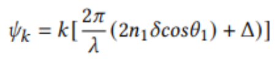
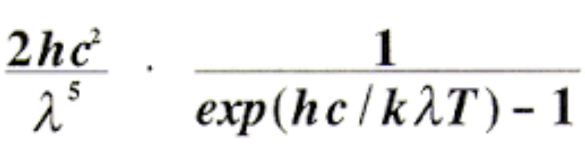

|

|

|

|
The primary goal of our project was to introduce the ability to render iridescent objects to our path tracer. In order to do this, we implemented the ability for our path tracer to account for various wavelengths for each ray. This also opened the ability to account for the effects of Black Body Radiation, which allowed us to render scenes of lights with different temperatures.
We used Project 3-1 and 3-2 as our starter code since it was well suited for our project. In order to implement Iridescence and Black Body Radiation, we must account for the wavelengths associated with a particular ray, so we modified our functions involved in pathtracing and materials to fit our needs. Since humans have three receptor cones for color, we sampled three random wavelengths per ray; we calculated a wavelength for the red, blue, and green channels based on an approximation of the distribution of the wavelengths of the corresponding receptor. We sampled wavelengths from the following normal distributions: a mean of 600 and a variation of 25 for red, a mean of 550 and a variation of 25 for green, and a mean of 450 and a variation of 15 for blue. Here are the approximate distributions for each receptor.
Iridescence occurs due to the apperance of a thin film, which causes the waves of light to be immediately reflected, and also allows for part of the waves to bounce within the thin film before being reflected back. The reflected wavelengths interact with each other in both constructive and deconstructive ways, resulting in iridescnce. Thus, in order to render iridescent objects, we had to account for the effects of such a thin film being present on top of another material. In other words, we created a new material which functioned similar to a microfacet material with the addition of a thin film. The calculations to find the BSDF value of the microfacet material from project 3-2 was still acurate with the exception of the Fresnel term, which had to be recalculated to account for the effects of the prescence of a thin film on top of the object. The physics and implementation details are described in the following sections.
Here is a diagram of a thin film, which will be referenced in the formulas in the following parts. n0 refers to the index of refraction of the external material, which will be air in this case, so n0 will always be set to 1.0. The middle layer represents the thin film. In iridescence, the thin film is often a film of a soap like material with an index of refraction (n2) between 1.2 and 1.4 and has a thickness of hundreds of nanometers. Finally, n3 refers to the index of refraction of our base microfacet material.
Rays of light can be thought to be made up of half spectral light and half polarized light. As a result, we had to do calculations for the amplitudes when passing from one surface to another for both halves of the light. In the formulas shown, theta i represents the angle we are entering with and theta t is the angle once we have entered the material. Similarly, n1 refers to the refractive index of the material we are entering from and n2 is the refractive index of the material we are entering.
These formulas account for how entering from one material to another changes the amplitude of the wave. We can combine these formulas to figure out the amplitude of the Transmited wave. Due to the part of the wave that hits the thin film and reflects, we need to include one t0|1 * r1|0. We then need to account for the bounces within the thin film. This can be extended to account for multiple bounces, but using one bounce is sufficient to render iridescent objects. For this portion, we include r1|2 * t1|2. Thus the final amplitude A is t0|1*t1|2*r1|0*r1|2.
The next step is to account for the phase change of the waves. which determines how the waves interact with each other. Waves can act in a constructive way, which will reinforce and strengthen the wave, a destructive wave, which occurs when both waves completely cancel each other, or some combination of the two. Using phase changes, we can represent how the waves will interact with one another by use the formula below with k set to 1, since we are only accounting for 1 bounce within the thin film. The lowercase delta refers to the scaled thickness of the thin film (see the section on thickness below). Finally, we had to calculate the sum of the phase changes that occur from going from one material to another, which is represented in the formula by the upercase delta. When going into a material with a higher index of refraction, we use PI as the phase change. Otherwise, we use zero.
|  |
Finally, we can combine this information to get the value for transmitance into the microfacet material. The formula provided by the reference we are using is the left of the two fomulas provided. However, since we are not using complex numbers, we used the approximation on the right which assumes that are terms are real. In the updated formula, lowercase phi represents the phase change which was previously represented by psi. Alpha represents r1|0*r1|2 and Beta represents t0|1*t1|2.
We now have the intensity that was transmitted. Since energy is conserved, we can use this to find the intensity of the reflected part, by subtracting it form 1. We use this result as the Fresnel Term when calculating the BRDF value for a microfacet material.
In reality, iridescent objects do not have a single thickness for the thin film. Instead, the thin film has slight variations in thickness throughout the object. We used perlin noise to represent the variation in thickness. Perlin noise is a method of generating smooth but random numbers. This allows us to better approximate the smooth variation in thickness for actual objects. Given the 3d point of the ray-object intersection, we used the perlin function to produce a random number between 0 and 1. We then used this random number + 40 divided by 40 to get a factor to use in scaling the provided thickness. We choose 40 as we wanted to use something of magniute smaller than the actual thickness which is in the hundreds.
Originally, we had hoped that our next step would be to produce soap bubbles. Originally, this appeared to be a relatively simple task as the Fresnel term we had calculated for rendering iridescent microfacet materials could be used to represent the ratio of reflected to refracted light for soap bubbles. In other words, theoretically we could have implemented the following approach. First, we could use our code for implementing glass as a starting point with the index of refraction of the glass to 1.0 to represent the same structure as a traditional soap bubble. Then, instead of using Schlick's approximation to get the probability of reflecting vs refracting, we would use the Fresnel term calculation that we had already successfully implemented. However, after some experimenting, we realized the framework we had started with would not be able to adapt to creating soap bubbles. For each ray, we sampled three wavelengths, which we passed all together throughout the code in an attempt to be efficient. This works for microfacet materials where the angle of reflection is not dependent on the wavelength. However, in soap bubbles the probability of reflecting or refracting is based on the wavelength of the ray, so we can't account for three wavelengths at once. After spending upwards of 15 hours researching and experimenting, we came to the conclusion that we would not be able to successfully implement soap bubbles given our current framework. Instead, we began researching how to restart the code such that we could render soap bubbles. Despite our attempts, we ran into a lot of bugs and realized that we would not be able to successfully implement soap bubbles before the deadline. Finally, we tried finding an existing spectral ray tracer to add our soap bubble material too. However, this approach presented new challenges such as working with new type of input files, different compiling and running methods, and familiarizing ourselves with an entirely new code base. Weighing our options with little time remaining, we decided to instead focus on implementing Black Body Radiation.
Black Body Radiation is a method to render scenes that encorporate the temperature of the light being used. By taking into account the energy emitted by a certain temperature of light when determining the intensity, we can demonstrate the effects of warm verse cool lighting. We used the formula below, and calculated the value for each of the red, green, and blue wavelengths for a specified temperature T. In the formula, c is the speed of light, h is PLanck's constant, and k is Boltzman's constant. Finally, we used the wavelengths and Wein's constant to find the Temperatre used to normalize each of the values.
|  |
Our main issue came in tyring to implement soap bubbles, detailed in a previous section. We also ran into an issue when calculating theta2. Originally, we attempted to simply use our pre-written refract function to calculate both theta1 and theta2 from our theta1. However, the refract function assumes that the angle is entering from air into whatever material it is entering. However, this is not the case from theta2 which enters from the thin film to the microfacet material. Another time consuming issue occured after we had correctly implemented the code for iridescence. We spent a long time researching and attempting to adjust our code before realizing it was a misunderstanding on the role of the refractive index we were using. After researching more, we discovered that the values we were using for the index of refraction for the thin film and microfacet material were not ideal, leading to results that didn't seem naturally iridescent.
For the most part, our issues all fell into a similar category. We were far too quick to start actually implementing our code. Eager to start implementing the project and seeing results, we began coding once we felt we had any understanding of how to approach the problem. In reality, we should have continued to research and plan until we had a more complete grasp of our project. Had we done this, we could have realized that the framework we were intending to use could not be extended to producing soap bubbles before starting, which would have given us enough time to start our project with the appropriate framework. No one in our group was particularly familiar with research papers, so we also learned a great deal about how to read and use research papers as references for projects.
|
|
|
|
|
|
Sydnie Shea Cohen - Worked on refactoring code, implementing all parts of iridescence, milestone report, milestone video, researched and experimented with soap bubble implementation, black body radiation, final presentation, final write up, and final video.
Ada Hu -
Eugene Lee -
Daniel Tseng - Worked on refactoring the code, implementing iridescence, attempted soap bubble implementation, formatted and edited the final write up.